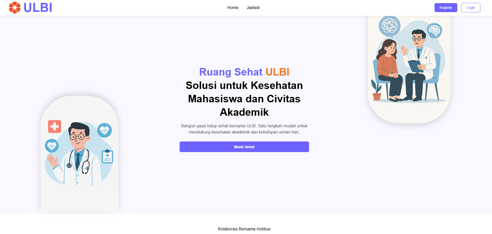
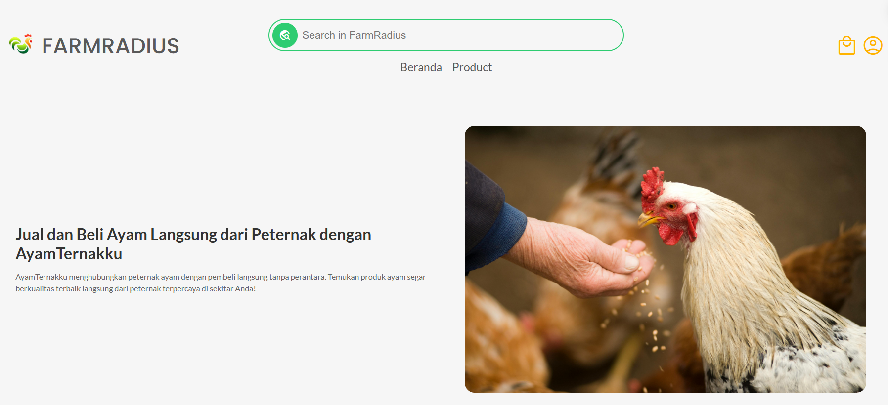
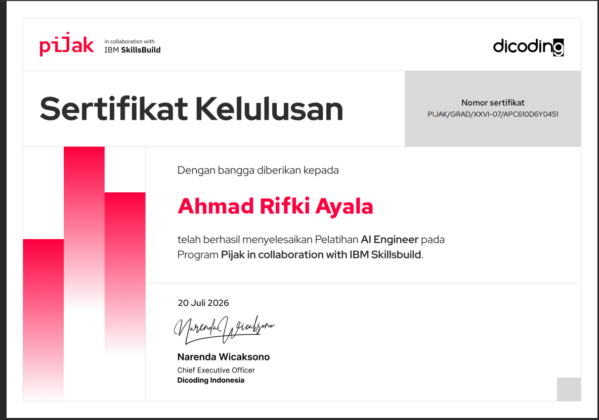
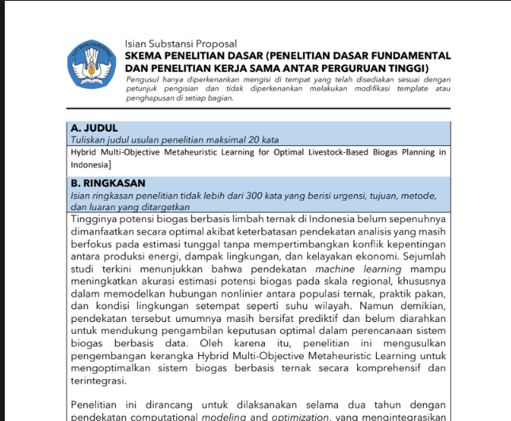

Kualitas kode
Clean, maintainable, dan mudah diuji.
Saya membangun sistem backend yang andal, efisien, dan terukur—menggabungkan rekayasa perangkat lunak, data, dan riset untuk menghasilkan solusi yang nyata.
Saya berfokus pada pengembangan backend, integrasi sistem, pengolahan data, serta riset terapan. Bagi saya, teknologi yang baik bukan sekadar berjalan—tetapi harus mudah dipelihara, aman, dapat dikembangkan, dan benar-benar membantu pengguna.
Dalam setiap proyek, saya mencoba menyeimbangkan kualitas engineering dengan kebutuhan bisnis: arsitektur yang masuk akal, API yang jelas, query yang efisien, deployment yang stabil, serta keputusan berbasis data.
Clean, maintainable, dan mudah diuji.
Solusi relevan dan memberi dampak.
Terus mengasah engineering & research.
Terbuka terhadap ide, feedback, dan diskusi.
Universitas Logistik dan Bisnis Internasional
Beberapa proyek pengembangan aplikasi, dashboard, integrasi sistem, dan riset yang pernah saya kerjakan.
Platform monitoring program manajemen proyek dengan dashboard analitik untuk membantu pemantauan progres dan aktivitas.

Management SystemSistem pemesanan dan pengelolaan ruang yang mendukung alur reservasi, administrasi, serta monitoring penggunaan.
Platform persiapan TOEFL yang membantu latihan, simulasi, pengelolaan materi, dan evaluasi hasil pembelajaran.

AnalyticsDashboard analitik untuk monitoring kondisi pertanian dengan penyajian informasi yang ringkas dan mudah dipahami.
Sistem informasi berbasis data untuk memprediksi potensi manure ternak dan mendukung estimasi potensi biogas. Proyek mengintegrasikan machine learning, optimasi, interpretabilitas model, dan dashboard informasi.

Aktif mengikuti pembelajaran dan sertifikasi yang mendukung pengembangan kompetensi pada software engineering, data, cloud, dan kecerdasan buatan.

Minat riset saya berada pada penerapan machine learning, explainable AI, optimasi, dan pengembangan sistem informasi untuk menyelesaikan masalah di dunia nyata.
Terbuka untuk diskusi teknologi, pengembangan backend, riset, integrasi sistem, maupun peluang kolaborasi profesional.
Kirim Pesan